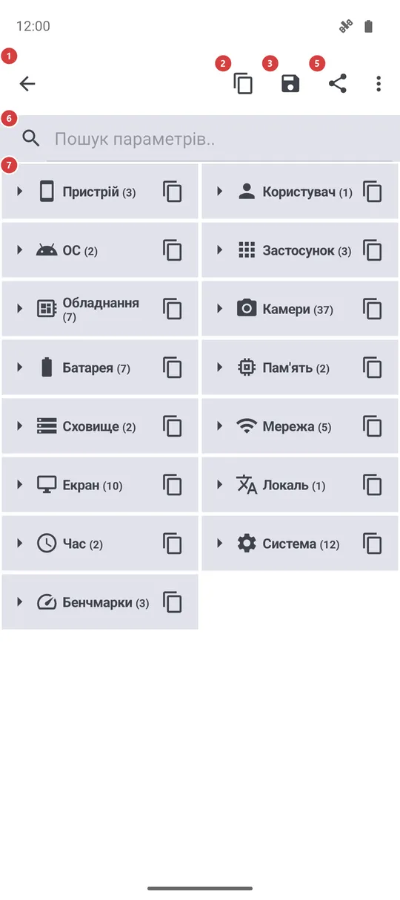
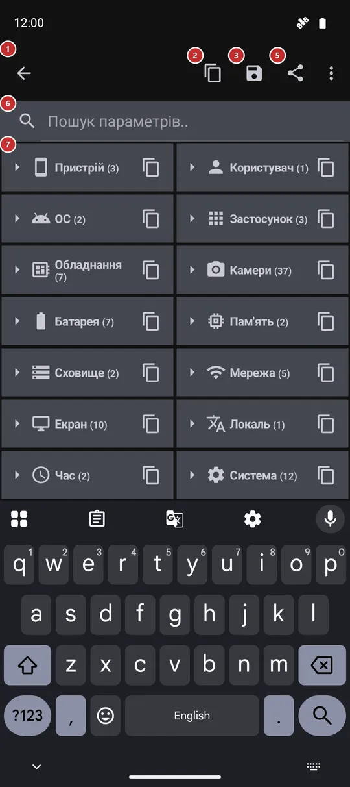

Відомості про систему
Для чого цей екран
Зрозумілий звіт про ваш телефон і про цей застосунок: пристрій, версія Android, батарея, пам’ять, сховище, мережа, екран та багато іншого. Його можна шукати, копіювати окреме значення або весь звіт, зберегти у файл чи надіслати - саме це зазвичай просить той, хто допомагає вам із проблемою.


Порядок дій
- Відкрийте екран і трохи зачекайте, поки збереться звіт. Групи з’являються згорнутими, по одному рядку, з кількістю значень усередині.
- Натисніть групу 7, щоб розгорнути її. «Розгорнути все» 4 розгортає всі групи одразу, а ця сама кнопка потім їх згортає. Застосунок запам’ятовує, які групи ви залишили відкритими.
- Щоб знайти одне значення, введіть запит у полі пошуку 6. Усі групи зі збігами розгорнуться, а на екрані залишаться лише підходящі рядки.
- Натисніть рядок 7, щоб скопіювати це значення, або кнопку копіювання в рядку групи, щоб скопіювати всю групу.
- Щоб передати все, користуйтеся «Копіювати» 2, «Зберегти» 3 або «Поділитися» 5. Спершу перегляньте звіт: у ньому є технічні ідентифікатори вашого пристрою та мережі.
Елементи
Заголовок
1Стрілка назадЗакриває екран і повертає туди, звідки ви прийшли.
У заголовку написано назву екрана, «Відомості про систему», а стрілка перед ним повертає назад, наприклад до меню програм або в налаштування. Нічого не втрачається: під час наступного відкриття екрана звіт збирається заново.
Дії зі звітом
2КопіюватиКопіює весь звіт до буфера обміну простим текстом.
Знадобиться, щоб вставити звіт у чат чи лист. Текст перелічує групи в тому порядку, в якому вони на екрані, зокрема згорнуті й сховані пошуком. У ньому всі значення, які може показати екран, тому прочитайте його, перш ніж вставляти в публічне місце.
3ЗберегтиЗаписує весь звіт у текстовий файл у теці «Завантаження».
Файл називається fms_system_info плюс дата й час, а повідомлення підкаже, куди він потрапив. Якщо записати файл не вдалося, повідомлення скаже про це, і нічого не збережеться. Користуйтеся, коли звіт потрібно додати до повідомлення, а не вставити в текст.
4Розгорнути все / Згорнути всеРозгортає всі групи одразу або згортає їх усі.
Значок і назва залежать від стану: коли все розгорнуто, кнопка згортає групи, інакше - розгортає всі. Вибір запам’ятовується до наступного відвідування. На вузькому екрані кнопка може опинитися в меню «Ще».
Пошук і список
6Пошук параметрів..Залишає у звіті лише параметри, що підходять під ваш запит.
Пошук іде по назвах груп, назвах значень і самих значеннях без урахування регістру. Групи зі збігами розгортаються на час пошуку й не змінюють те, що ви залишили відкритим. Якщо нічого не знайдено, список так і скаже. Очистьте поле, щоб повернути свої групи.
7Групи та параметриСам звіт - групи, які можна розгортати та згортати.
У кожної групи є значок, назва та кількість значень. Натисніть рядок, щоб розгорнути або згорнути групу; маленька кнопка копіювання праворуч копіює лише цю групу, а повідомлення називає її. У розгорнутій групі значення йдуть рядками з назви й значення; натисніть рядок, щоб скопіювати його як назва: значення. В альбомній орієнтації згорнуті групи стоять у чотири стовпці замість двох.
Групи такі: «Пристрій», «Користувач», «ОС», «Застосунок» (версія, збірка та редакція), «Обладнання» (процесор і чип, ядро, версія графіки, межа пам’яті застосунку), «Камери» (що заявляє телефон і що з цього зробив застосунок), «Батарея», «Пам’ять», «Сховище», «Мережа» (тип підключення, тарифікованість, VPN, режим польоту та локальна адреса), «Екран», «Локаль», «Час», «Система» (список мов, патч безпеки, відбиток збірки, інсталятор, дати встановлення) та «Бенчмарки». Група, якій нічого показати, не виводиться.
«Бенчмарки» - короткі тести швидкості пам’яті та сховища, які запускаються щоразу, коли ви відкриваєте екран, тому цифри приблизні й від разу до разу відрізняються. У редакції noLegal нижче йдуть ще сім груп: «ОС та безпека», «Спеціальні дозволи», «Інсталятор та підпис», «Вбудовані середовища», «Монтування та сховище», «Мережева діагностика» та «Ресурси процесу».